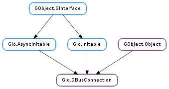

| static | new(stream, guid, flags, observer, cancellable, callback, *user_data) |
| static | new_finish(res) |
| static | new_for_address(address, flags, observer, cancellable, callback, *user_data) |
| static | new_for_address_finish(res) |
| static | new_for_address_sync(address, flags, observer, cancellable) |
| static | new_sync(stream, guid, flags, observer, cancellable) |
| add_filter(filter_function, *user_data) | |
| call(bus_name, object_path, interface_name, method_name, parameters, reply_type, flags, ...) | |
| call_finish(res) | |
| call_sync(bus_name, object_path, interface_name, method_name, parameters, reply_type, flags, ...) | |
| call_with_unix_fd_list(bus_name, object_path, interface_name, method_name, parameters, reply_type, flags, ...) | |
| call_with_unix_fd_list_finish(res) | |
| call_with_unix_fd_list_sync(bus_name, object_path, interface_name, method_name, parameters, reply_type, flags, ...) | |
| close(cancellable, callback, *user_data) | |
| close_finish(res) | |
| close_sync(cancellable) | |
| emit_signal(destination_bus_name, object_path, interface_name, signal_name, parameters) | |
| export_action_group(object_path, action_group) | |
| export_menu_model(object_path, menu) | |
| flush(cancellable, callback, *user_data) | |
| flush_finish(res) | |
| flush_sync(cancellable) | |
| get_capabilities() | |
| get_exit_on_close() | |
| get_guid() | |
| get_last_serial() | |
| get_peer_credentials() | |
| get_stream() | |
| get_unique_name() | |
| is_closed() | |
| register_object(object_path, interface_info, vtable, user_data, user_data_free_func) | |
| register_subtree(object_path, vtable, flags, user_data, user_data_free_func) | |
| remove_filter(filter_id) | |
| send_message(message, flags) | |
| send_message_with_reply(message, flags, timeout_msec, cancellable, callback, *user_data) | |
| send_message_with_reply_finish(res) | |
| send_message_with_reply_sync(message, flags, timeout_msec, cancellable) | |
| set_exit_on_close(exit_on_close) | |
| signal_subscribe(sender, interface_name, member, object_path, arg0, flags, callback, *user_data) | |
| signal_unsubscribe(subscription_id) | |
| start_message_processing() | |
| unexport_action_group(export_id) | |
| unexport_menu_model(export_id) | |
| unregister_object(registration_id) | |
| unregister_subtree(registration_id) |
| Name | Type | Flags | Description |
|---|---|---|---|
| address | str | w/c | D-Bus address specifying potential socket endpoints |
| authentication-observer | Gio.DBusAuthObserver | w/c | Object used to assist in the authentication process |
| capabilities | Gio.DBusCapabilityFlags | r | Capabilities |
| closed | bool | r | Whether the connection is closed |
| exit-on-close | bool | r/w | Whether the process is terminated when the connection is closed |
| flags | Gio.DBusConnectionFlags | w/c | Flags |
| guid | str | r/w/c | GUID of the server peer |
| stream | Gio.IOStream | r/w/c | The underlying streams used for I/O |
| unique-name | str | r | Unique name of bus connection |
| Name | Parameters | Return | Description |
|---|---|---|---|
| closed | bool, GLib.Error | Emitted when the connection is closed. The cause of this event can be * If Gio.DBusConnection.close () is called. In this case remote_peer_vanished is set to False and error is None. * If the remote peer closes the connection. In this case remote_peer_vanished is set to True and error is set. * If the remote peer sends invalid or malformed data. In this case remote_peer_vanished is set to False and error is set. Upon receiving this signal, you should give up your reference to connection. You are guaranteed that this signal is emitted only once. |
Bases: GObject.Object, Gio.AsyncInitable, Gio.Initable
The Gio.DBusConnection type is used for D-Bus connections to remote peers such as a message buses. It is a low-level API that offers a lot of flexibility. For instance, it lets you establish a connection over any transport that can by represented as an Gio.IOStream.
This class is rarely used directly in D-Bus clients. If you are writing an D-Bus client, it is often easier to use the Gio.bus_own_name (), Gio.bus_watch_name () or Gio.DBusProxy.new_for_bus () APIs.
As an exception to the usual GLib rule that a particular object must not be used by two threads at the same time, Gio.DBusConnection ‘s methods may be called from any thread
This is so that Gio.bus_get () and Gio.bus_get_sync () can safely return the same Gio.DBusConnection when called from any thread.
.
Most of the ways to obtain a Gio.DBusConnection automatically initialize it (i.e. connect to D-Bus): for instance, Gio.DBusConnection.new () and Gio.bus_get (), and the synchronous versions of those methods, give you an initialized connection. Language bindings for GIO should use Gio.Initable.new () or Gio.AsyncInitable.new_async (), which also initialize the connection.
If you construct an uninitialized Gio.DBusConnection, such as via GObject.Object.new (), you must initialize it via Gio.Initable.init () or Gio.AsyncInitable.init_async () before using its methods or properties. Calling methods or accessing properties on a Gio.DBusConnection that has not completed initialization successfully is considered to be invalid, and leads to undefined behaviour. In particular, if initialization fails with a GLib.Error, the only valid thing you can do with that Gio.DBusConnection is to free it with GObject.Object.unref ().
D-Bus server example``FIXME: MISSING XINCLUDE CONTENT`` D-Bus subtree example``FIXME: MISSING XINCLUDE CONTENT`` D-Bus UNIX File Descriptor example``FIXME: MISSING XINCLUDE CONTENT`` Exporting a GObject.Object```FIXME: MISSING XINCLUDE CONTENT`
| Parameters: |
|
|---|
Asynchronously sets up a D-Bus connection for exchanging D-Bus messages with the end represented by stream.
If stream is a Gio.SocketConnection, then the corresponding Gio.Socket will be put into non-blocking mode.
The D-Bus connection will interact with stream from a worker thread. As a result, the caller should not interact with stream after this method has been called, except by calling GObject.Object.unref () on it.
If observer is not None it may be used to control the authentication process.
When the operation is finished, callback will be invoked. You can then call Gio.DBusConnection.new_finish () to get the result of the operation.
This is a asynchronous failable constructor. See Gio.DBusConnection.new_sync () for the synchronous version.
| Parameters: | res (Gio.AsyncResult) – A Gio.AsyncResult obtained from the Gio.AsyncReadyCallback passed to Gio.DBusConnection.new (). |
|---|---|
| Raises: | GLib.GError |
| Returns: | A Gio.DBusConnection or None if error is set. Free with GObject.Object.unref (). |
| Return type: | Gio.DBusConnection |
Finishes an operation started with Gio.DBusConnection.new ().
| Parameters: |
|
|---|
Asynchronously connects and sets up a D-Bus client connection for exchanging D-Bus messages with an endpoint specified by address which must be in the D-Bus address format.
This constructor can only be used to initiate client-side connections - use Gio.DBusConnection.new () if you need to act as the server. In particular, flags cannot contain the Gio.DBusConnectionFlags.AUTHENTICATION_SERVER or Gio.DBusConnectionFlags.AUTHENTICATION_ALLOW_ANONYMOUS flags.
When the operation is finished, callback will be invoked. You can then call Gio.DBusConnection.new_finish () to get the result of the operation.
If observer is not None it may be used to control the authentication process.
This is a asynchronous failable constructor. See Gio.DBusConnection.new_for_address_sync () for the synchronous version.
| Parameters: | res (Gio.AsyncResult) – A Gio.AsyncResult obtained from the Gio.AsyncReadyCallback passed to Gio.DBusConnection.new (). |
|---|---|
| Raises: | GLib.GError |
| Returns: | A Gio.DBusConnection or None if error is set. Free with GObject.Object.unref (). |
| Return type: | Gio.DBusConnection |
Finishes an operation started with Gio.DBusConnection.new_for_address ().
| Parameters: |
|
|---|---|
| Raises: | |
| Returns: | A Gio.DBusConnection or None if error is set. Free with GObject.Object.unref (). |
| Return type: |
Synchronously connects and sets up a D-Bus client connection for exchanging D-Bus messages with an endpoint specified by address which must be in the D-Bus address format.
This constructor can only be used to initiate client-side connections - use Gio.DBusConnection.new_sync () if you need to act as the server. In particular, flags cannot contain the Gio.DBusConnectionFlags.AUTHENTICATION_SERVER or Gio.DBusConnectionFlags.AUTHENTICATION_ALLOW_ANONYMOUS flags.
This is a synchronous failable constructor. See Gio.DBusConnection.new_for_address () for the asynchronous version.
If observer is not None it may be used to control the authentication process.
| Parameters: |
|
|---|---|
| Raises: | |
| Returns: | A Gio.DBusConnection or None if error is set. Free with GObject.Object.unref (). |
| Return type: |
Synchronously sets up a D-Bus connection for exchanging D-Bus messages with the end represented by stream.
If stream is a Gio.SocketConnection, then the corresponding Gio.Socket will be put into non-blocking mode.
The D-Bus connection will interact with stream from a worker thread. As a result, the caller should not interact with stream after this method has been called, except by calling GObject.Object.unref () on it.
If observer is not None it may be used to control the authentication process.
This is a synchronous failable constructor. See Gio.DBusConnection.new () for the asynchronous version.
| Parameters: |
|
|---|---|
| Returns: | A filter identifier that can be used with Gio.DBusConnection.remove_filter (). |
| Return type: |
Adds a message filter. Filters are handlers that are run on all incoming and outgoing messages, prior to standard dispatch. Filters are run in the order that they were added. The same handler can be added as a filter more than once, in which case it will be run more than once. Filters added during a filter callback won’t be run on the message being processed. Filter functions are allowed to modify and even drop messages.
Note that filters are run in a dedicated message handling thread so they can’t block and, generally, can’t do anything but signal a worker thread. Also note that filters are rarely needed - use API such as Gio.DBusConnection.send_message_with_reply (), Gio.DBusConnection.signal_subscribe () or Gio.DBusConnection.call () instead.
If a filter consumes an incoming message the message is not dispatched anywhere else - not even the standard dispatch machinery (that API such as Gio.DBusConnection.signal_subscribe () and Gio.DBusConnection.send_message_with_reply () relies on) will see the message. Similary, if a filter consumes an outgoing message, the message will not be sent to the other peer.
| Parameters: |
|
|---|
Asynchronously invokes the method_name method on the interface_name D-Bus interface on the remote object at object_path owned by bus_name.
If connection is closed then the operation will fail with Gio.IOErrorEnum.CLOSED. If cancellable is canceled, the operation will fail with Gio.IOErrorEnum.CANCELLED. If parameters contains a value not compatible with the D-Bus protocol, the operation fails with Gio.IOErrorEnum.INVALID_ARGUMENT.
If reply_type is non-None then the reply will be checked for having this type and an error will be raised if it does not match. Said another way, if you give a reply_type then any non-None return value will be of this type.
If the parameters GLib.Variant is floating, it is consumed. This allows convenient ‘inline’ use of GLib.Variant.new (), e.g.:
g_dbus_connection_call (connection,
"org.freedesktop.StringThings",
"/org/freedesktop/StringThings",
"org.freedesktop.StringThings",
"TwoStrings",
g_variant_new ("(ss)",
"Thing One",
"Thing Two"),
NULL,
G_DBUS_CALL_FLAGS_NONE,
-1,
NULL,
(GAsyncReadyCallback) two_strings_done,
NULL);
This is an asynchronous method. When the operation is finished, callback will be invoked in the thread-default main loop of the thread you are calling this method from. You can then call Gio.DBusConnection.call_finish () to get the result of the operation. See Gio.DBusConnection.call_sync () for the synchronous version of this function.
If callback is None then the D-Bus method call message will be sent with the Gio.DBusMessageFlags.NO_REPLY_EXPECTED flag set.
| Parameters: | res (Gio.AsyncResult) – A Gio.AsyncResult obtained from the Gio.AsyncReadyCallback passed to Gio.DBusConnection.call (). |
|---|---|
| Raises: | GLib.GError |
| Returns: | None if error is set. Otherwise a GLib.Variant tuple with return values. Free with GLib.Variant.unref (). |
| Return type: | GLib.Variant |
Finishes an operation started with Gio.DBusConnection.call ().
| Parameters: |
|
|---|---|
| Raises: | |
| Returns: | None if error is set. Otherwise a GLib.Variant tuple with return values. Free with GLib.Variant.unref (). |
| Return type: |
Synchronously invokes the method_name method on the interface_name D-Bus interface on the remote object at object_path owned by bus_name.
If connection is closed then the operation will fail with Gio.IOErrorEnum.CLOSED. If cancellable is canceled, the operation will fail with Gio.IOErrorEnum.CANCELLED. If parameters contains a value not compatible with the D-Bus protocol, the operation fails with Gio.IOErrorEnum.INVALID_ARGUMENT.
If reply_type is non-None then the reply will be checked for having this type and an error will be raised if it does not match. Said another way, if you give a reply_type then any non-None return value will be of this type.
If the parameters GLib.Variant is floating, it is consumed. This allows convenient ‘inline’ use of GLib.Variant.new (), e.g.:
g_dbus_connection_call_sync (connection,
"org.freedesktop.StringThings",
"/org/freedesktop/StringThings",
"org.freedesktop.StringThings",
"TwoStrings",
g_variant_new ("(ss)",
"Thing One",
"Thing Two"),
NULL,
G_DBUS_CALL_FLAGS_NONE,
-1,
NULL,
&error);
The calling thread is blocked until a reply is received. See Gio.DBusConnection.call () for the asynchronous version of this method.
| Parameters: |
|
|---|
Like Gio.DBusConnection.call () but also takes a Gio.UnixFDList object.
This method is only available on UNIX.
| Parameters: | res (Gio.AsyncResult) – A Gio.AsyncResult obtained from the Gio.AsyncReadyCallback passed to Gio.DBusConnection.call_with_unix_fd_list (). |
|---|---|
| Raises: | GLib.GError |
| Returns: | None if error is set. Otherwise a GLib.Variant tuple with return values. Free with GLib.Variant.unref (). |
| Return type: | GLib.Variant, out_fd_list: Gio.UnixFDList |
Finishes an operation started with Gio.DBusConnection.call_with_unix_fd_list ().
| Parameters: |
|
|---|---|
| Raises: | |
| Returns: | None if error is set. Otherwise a GLib.Variant tuple with return values. Free with GLib.Variant.unref (). |
| Return type: | GLib.Variant, out_fd_list: Gio.UnixFDList |
Like Gio.DBusConnection.call_sync () but also takes and returns Gio.UnixFDList objects.
This method is only available on UNIX.
| Parameters: |
|
|---|
Closes connection. Note that this never causes the process to exit (this might only happen if the other end of a shared message bus connection disconnects, see Gio.DBusConnection :exit-on-close ).
Once the connection is closed, operations such as sending a message will return with the error Gio.IOErrorEnum.CLOSED. Closing a connection will not automatically flush the connection so queued messages may be lost. Use Gio.DBusConnection.flush () if you need such guarantees.
If connection is already closed, this method fails with Gio.IOErrorEnum.CLOSED.
When connection has been closed, the Gio.DBusConnection ::closed signal is emitted in the thread-default main loop of the thread that connection was constructed in.
This is an asynchronous method. When the operation is finished, callback will be invoked in the thread-default main loop of the thread you are calling this method from. You can then call Gio.DBusConnection.close_finish () to get the result of the operation. See Gio.DBusConnection.close_sync () for the synchronous version.
| Parameters: | res (Gio.AsyncResult) – A Gio.AsyncResult obtained from the Gio.AsyncReadyCallback passed to Gio.DBusConnection.close (). |
|---|---|
| Raises: | GLib.GError |
| Returns: | True if the operation succeeded, False if error is set. |
| Return type: | bool |
Finishes an operation started with Gio.DBusConnection.close ().
| Parameters: | cancellable (Gio.Cancellable or None) – A Gio.Cancellable or None. |
|---|---|
| Raises: | GLib.GError |
| Returns: | True if the operation succeeded, False if error is set. |
| Return type: | bool |
Synchronously closees connection. The calling thread is blocked until this is done. See Gio.DBusConnection.close () for the asynchronous version of this method and more details about what it does.
| Parameters: |
|
|---|---|
| Raises: | |
| Returns: | True unless error is set. |
| Return type: |
Emits a signal.
If the parameters GLib.Variant is floating, it is consumed.
This can only fail if parameters is not compatible with the D-Bus protocol.
| Parameters: |
|
|---|---|
| Raises: | |
| Returns: | the ID of the export (never zero), or 0 in case of failure |
| Return type: |
Exports action_group on connection at object_path.
The implemented D-Bus API should be considered private. It is subject to change in the future.
A given object path can only have one action group exported on it. If this constraint is violated, the export will fail and 0 will be returned (with error set accordingly).
You can unexport the action group using Gio.DBusConnection.unexport_action_group () with the return value of this function.
The thread default main context is taken at the time of this call. All incoming action activations and state change requests are reported from this context. Any changes on the action group that cause it to emit signals must also come from this same context. Since incoming action activations and state change requests are rather likely to cause changes on the action group, this effectively limits a given action group to being exported from only one main context.
| Parameters: |
|
|---|---|
| Raises: | |
| Returns: | the ID of the export (never zero), or 0 in case of failure |
| Return type: |
Exports menu on connection at object_path.
The implemented D-Bus API should be considered private. It is subject to change in the future.
An object path can only have one menu model exported on it. If this constraint is violated, the export will fail and 0 will be returned (with error set accordingly).
You can unexport the menu model using Gio.DBusConnection.unexport_menu_model () with the return value of this function.
| Parameters: |
|
|---|
Asynchronously flushes connection, that is, writes all queued outgoing message to the transport and then flushes the transport (using Gio.OutputStream.flush_async ()). This is useful in programs that wants to emit a D-Bus signal and then exit immediately. Without flushing the connection, there is no guarantee that the message has been sent to the networking buffers in the OS kernel.
This is an asynchronous method. When the operation is finished, callback will be invoked in the thread-default main loop of the thread you are calling this method from. You can then call Gio.DBusConnection.flush_finish () to get the result of the operation. See Gio.DBusConnection.flush_sync () for the synchronous version.
| Parameters: | res (Gio.AsyncResult) – A Gio.AsyncResult obtained from the Gio.AsyncReadyCallback passed to Gio.DBusConnection.flush (). |
|---|---|
| Raises: | GLib.GError |
| Returns: | True if the operation succeeded, False if error is set. |
| Return type: | bool |
Finishes an operation started with Gio.DBusConnection.flush ().
| Parameters: | cancellable (Gio.Cancellable or None) – A Gio.Cancellable or None. |
|---|---|
| Raises: | GLib.GError |
| Returns: | True if the operation succeeded, False if error is set. |
| Return type: | bool |
Synchronously flushes connection. The calling thread is blocked until this is done. See Gio.DBusConnection.flush () for the asynchronous version of this method and more details about what it does.
| Returns: | Zero or more flags from the Gio.DBusCapabilityFlags enumeration. |
|---|---|
| Return type: | Gio.DBusCapabilityFlags |
Gets the capabilities negotiated with the remote peer
| Returns: | Whether the process is terminated when connection is closed by the remote peer. |
|---|---|
| Return type: | bool |
Gets whether the process is terminated when connection is closed by the remote peer. See Gio.DBusConnection :exit-on-close for more details.
| Returns: | The GUID. Do not free this string, it is owned by connection. |
|---|---|
| Return type: | str |
The GUID of the peer performing the role of server when authenticating. See Gio.DBusConnection :guid for more details.
| Returns: | the last used serial or zero when no message has been sent within the current thread. |
|---|---|
| Return type: | int |
Retrieves the last serial number assigned to a Gio.DBusMessage on the current thread. This includes messages sent via both low-level API such as Gio.DBusConnection.send_message () as well as high-level API such as Gio.DBusConnection.emit_signal (), Gio.DBusConnection.call () or Gio.DBusProxy.call ().
| Returns: | A Gio.Credentials or None if not available. Do not free this object, it is owned by connection. |
|---|---|
| Return type: | Gio.Credentials |
Gets the credentials of the authenticated peer. This will always return None unless connection acted as a server (e.g. Gio.DBusConnectionFlags.AUTHENTICATION_SERVER was passed) when set up and the client passed credentials as part of the authentication process.
In a message bus setup, the message bus is always the server and each application is a client. So this method will always return None for message bus clients.
| Returns: | the stream used for IO |
|---|---|
| Return type: | Gio.IOStream |
Gets the underlying stream used for IO.
While the Gio.DBusConnection is active, it will interact with this stream from a worker thread, so it is not safe to interact with the stream directly.
| Returns: | The unique name or None if connection is not a message bus connection. Do not free this string, it is owned by connection. |
|---|---|
| Return type: | str |
Gets the unique name of connection as assigned by the message bus. This can also be used to figure out if connection is a message bus connection.
| Returns: | True if the connection is closed, False otherwise. |
|---|---|
| Return type: | bool |
Gets whether connection is closed.
| Parameters: |
|
|---|---|
| Raises: | |
| Returns: | 0 if error is set, otherwise a registration id (never 0) that can be used with Gio.DBusConnection.unregister_object () . |
| Return type: |
Registers callbacks for exported objects at object_path with the D-Bus interface that is described in interface_info.
Calls to functions in vtable (and user_data_free_func ) will happen in the thread-default main loop of the thread you are calling this method from.
Note that all GLib.Variant values passed to functions in vtable will match the signature given in interface_info - if a remote caller passes incorrect values, the org.freedesktop.DBus.Error.InvalidArgs is returned to the remote caller.
Additionally, if the remote caller attempts to invoke methods or access properties not mentioned in interface_info the org.freedesktop.DBus.Error.UnknownMethod resp. org.freedesktop.DBus.Error.InvalidArgs errors are returned to the caller.
It is considered a programming error if the Gio.DBusInterfaceGetPropertyFunc function in vtable returns a GLib.Variant of incorrect type.
If an existing callback is already registered at object_path and interface_name, then error is set to Gio.IOErrorEnum.EXISTS.
GDBus automatically implements the standard D-Bus interfaces org.freedesktop.DBus.Properties, org.freedesktop.DBus.Introspectable and org.freedesktop.Peer, so you don’t have to implement those for the objects you export. You can implement org.freedesktop.DBus.Properties yourself, e.g. to handle getting and setting of properties asynchronously.
Note that the reference count on interface_info will be incremented by 1 (unless allocated statically, e.g. if the reference count is -1, see Gio.DBusInterfaceInfo.ref ()) for as long as the object is exported. Also note that vtable will be copied.
See for an example of how to use this method.
| Parameters: |
|
|---|---|
| Raises: | |
| Returns: | 0 if error is set, otherwise a subtree registration id (never 0) that can be used with Gio.DBusConnection.unregister_subtree () . |
| Return type: |
Registers a whole subtree of dynamic objects.
The enumerate and introspection functions in vtable are used to convey, to remote callers, what nodes exist in the subtree rooted by object_path.
When handling remote calls into any node in the subtree, first the enumerate function is used to check if the node exists. If the node exists or the Gio.DBusSubtreeFlags.DISPATCH_TO_UNENUMERATED_NODES flag is set the introspection function is used to check if the node supports the requested method. If so, the dispatch function is used to determine where to dispatch the call. The collected Gio.DBusInterfaceVTable and object will be used to call into the interface vtable for processing the request.
All calls into user-provided code will be invoked in the thread-default main loop of the thread you are calling this method from.
If an existing subtree is already registered at object_path or then error is set to Gio.IOErrorEnum.EXISTS.
Note that it is valid to register regular objects (using Gio.DBusConnection.register_object ()) in a subtree registered with Gio.DBusConnection.register_subtree () - if so, the subtree handler is tried as the last resort. One way to think about a subtree handler is to consider it a fallback handler for object paths not registered via Gio.DBusConnection.register_object () or other bindings.
Note that vtable will be copied so you cannot change it after registration.
See for an example of how to use this method.
| Parameters: | filter_id (int) – an identifier obtained from Gio.DBusConnection.add_filter () |
|---|
Removes a filter.
| Parameters: |
|
|---|---|
| Raises: | |
| Returns: | True if the message was well-formed and queued for transmission, False if error is set. |
| Return type: |
Asynchronously sends message to the peer represented by connection.
Unless flags contain the Gio.DBusSendMessageFlags.PRESERVE_SERIAL flag, the serial number will be assigned by connection and set on message via Gio.DBusMessage.set_serial (). If out_serial is not None, then the serial number used will be written to this location prior to submitting the message to the underlying transport.
If connection is closed then the operation will fail with Gio.IOErrorEnum.CLOSED. If message is not well-formed, the operation fails with Gio.IOErrorEnum.INVALID_ARGUMENT.
See and for an example of how to use this low-level API to send and receive UNIX file descriptors.
Note that message must be unlocked, unless flags contain the Gio.DBusSendMessageFlags.PRESERVE_SERIAL flag.
| Parameters: |
|
|---|---|
| Return type: | out_serial: int |
Asynchronously sends message to the peer represented by connection.
Unless flags contain the Gio.DBusSendMessageFlags.PRESERVE_SERIAL flag, the serial number will be assigned by connection and set on message via Gio.DBusMessage.set_serial (). If out_serial is not None, then the serial number used will be written to this location prior to submitting the message to the underlying transport.
If connection is closed then the operation will fail with Gio.IOErrorEnum.CLOSED. If cancellable is canceled, the operation will fail with Gio.IOErrorEnum.CANCELLED. If message is not well-formed, the operation fails with Gio.IOErrorEnum.INVALID_ARGUMENT.
This is an asynchronous method. When the operation is finished, callback will be invoked in the thread-default main loop of the thread you are calling this method from. You can then call Gio.DBusConnection.send_message_with_reply_finish () to get the result of the operation. See Gio.DBusConnection.send_message_with_reply_sync () for the synchronous version.
Note that message must be unlocked, unless flags contain the Gio.DBusSendMessageFlags.PRESERVE_SERIAL flag.
See and for an example of how to use this low-level API to send and receive UNIX file descriptors.
| Parameters: | res (Gio.AsyncResult) – A Gio.AsyncResult obtained from the Gio.AsyncReadyCallback passed to Gio.DBusConnection.send_message_with_reply (). |
|---|---|
| Raises: | GLib.GError |
| Returns: | A locked Gio.DBusMessage or None if error is set. |
| Return type: | Gio.DBusMessage |
Finishes an operation started with Gio.DBusConnection.send_message_with_reply ().
Note that error is only set if a local in-process error occurred. That is to say that the returned Gio.DBusMessage object may be of type Gio.DBusMessageType.ERROR. Use Gio.DBusMessage.to_gerror () to transcode this to a GLib.Error.
See and for an example of how to use this low-level API to send and receive UNIX file descriptors.
| Parameters: |
|
|---|---|
| Raises: | |
| Returns: | A locked Gio.DBusMessage that is the reply to message or None if error is set. |
| Return type: | Gio.DBusMessage, out_serial: int |
Synchronously sends message to the peer represented by connection and blocks the calling thread until a reply is received or the timeout is reached. See Gio.DBusConnection.send_message_with_reply () for the asynchronous version of this method.
Unless flags contain the Gio.DBusSendMessageFlags.PRESERVE_SERIAL flag, the serial number will be assigned by connection and set on message via Gio.DBusMessage.set_serial (). If out_serial is not None, then the serial number used will be written to this location prior to submitting the message to the underlying transport.
If connection is closed then the operation will fail with Gio.IOErrorEnum.CLOSED. If cancellable is canceled, the operation will fail with Gio.IOErrorEnum.CANCELLED. If message is not well-formed, the operation fails with Gio.IOErrorEnum.INVALID_ARGUMENT.
Note that error is only set if a local in-process error occurred. That is to say that the returned Gio.DBusMessage object may be of type Gio.DBusMessageType.ERROR. Use Gio.DBusMessage.to_gerror () to transcode this to a GLib.Error.
See and for an example of how to use this low-level API to send and receive UNIX file descriptors.
Note that message must be unlocked, unless flags contain the Gio.DBusSendMessageFlags.PRESERVE_SERIAL flag.
| Parameters: | exit_on_close (bool) – Whether the process should be terminated when connection is closed by the remote peer. |
|---|
Sets whether the process should be terminated when connection is closed by the remote peer. See Gio.DBusConnection :exit-on-close for more details.
Note that this function should be used with care. Most modern UNIX desktops tie the notion of a user session the session bus, and expect all of a users applications to quit when their bus connection goes away. If you are setting exit_on_close to False for the shared session bus connection, you should make sure that your application exits when the user session ends.
| Parameters: |
|
|---|---|
| Returns: | A subscription identifier that can be used with Gio.DBusConnection.signal_unsubscribe (). |
| Return type: |
Subscribes to signals on connection and invokes callback with a whenever the signal is received. Note that callback will be invoked in the thread-default main loop of the thread you are calling this method from.
If connection is not a message bus connection, sender must be None.
If sender is a well-known name note that callback is invoked with the unique name for the owner of sender, not the well-known name as one would expect. This is because the message bus rewrites the name. As such, to avoid certain race conditions, users should be tracking the name owner of the well-known name and use that when processing the received signal.
| Parameters: | subscription_id (int) – A subscription id obtained from Gio.DBusConnection.signal_subscribe (). |
|---|
Unsubscribes from signals.
If connection was created with Gio.DBusConnectionFlags.DELAY_MESSAGE_PROCESSING, this method starts processing messages. Does nothing on if connection wasn’t created with this flag or if the method has already been called.
| Parameters: | export_id (int) – the ID from Gio.DBusConnection.export_action_group () |
|---|
Reverses the effect of a previous call to Gio.DBusConnection.export_action_group ().
It is an error to call this function with an ID that wasn’t returned from Gio.DBusConnection.export_action_group () or to call it with the same ID more than once.
| Parameters: | export_id (int) – the ID from Gio.DBusConnection.export_menu_model () |
|---|
Reverses the effect of a previous call to Gio.DBusConnection.export_menu_model ().
It is an error to call this function with an ID that wasn’t returned from Gio.DBusConnection.export_menu_model () or to call it with the same ID more than once.